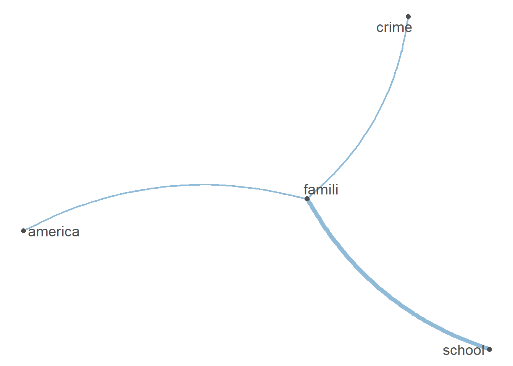

#install.packages("RCurl")
#install.packages("quanteda")
#install.packages("tidyverse)
#install.packages("dplyr")
#install.packages("quanteda.textplots")
#install.packages("quanteda.textstats")
#install.packages("udpipe")
library("RCurl")
library("quanteda")
library("tidyverse")
library("dplyr")
library("quanteda.textplots")
library("quanteda.textstats")
library("udpipe")Gesamter Code Stand 15.07
1 Packete laden und Daten einlesen
Zunächst installieren und laden wir alle Packete, die wir heute und morgen brauchen.
Dann laden wir die Datei die hinter dem Link liegt mit der Funktion getURL() aus dem package Rcurl herunter. Mit einem Blick in das Environment sehen wir, dass die einzelnen Wörter mit einem ; getrennt werden . Daher brauchen wir die Funktion read.csv2() aus dem utils Packet - das Packet ist vorinstalliert und immer geladen - um die Daten in R einzulesen. Der Datensatz wird im Objekt daten_df gespeichert.
url <- getURL("https://raw.githubusercontent.com/valeriehase/Salamanca-CSS-SummerSchool/main/Processing%20text%20and%20text%20as%20data/data_tvseries.csv")
daten_df <- read.csv2(text = url)Alternativ können Daten in einer .csv Datei auch mit einem , voneinander abgetrennt sein. Hier bräuchte es dann die Funktion read.csv() zum Einlesen.
Nach dem Einlesen der Daten ist es üblich sich zunächst einen Überblick über die Daten zu verschaffen und zu kontrollieren, ob alles korrekt eingelesen wurde.
head(daten_df) Title Year Parental.Rating Rating Number.of.Votes
1 1. Game of Thrones 2011–2019 TV-MA 9.2 2.3M
2 2. Breaking Bad 2008–2013 TV-MA 9.5 2.1M
3 3. Stranger Things 2016–2025 TV-14 8.7 1.3M
4 4. Friends 1994–2004 TV-14 8.9 1.1M
5 5. The Walking Dead 2010–2022 TV-MA 8.1 1.1M
6 6. Sherlock 2010–2017 TV-14 9.1 1M
Description
1 Nine noble families fight for control over the lands of Westeros, while an ancient enemy returns after being dormant for millennia.
2 A chemistry teacher diagnosed with inoperable lung cancer turns to manufacturing and selling methamphetamine with a former student in order to secure his family's future.
3 When a young boy vanishes, a small town uncovers a mystery involving secret experiments, terrifying supernatural forces and one strange little girl.
4 Follows the personal and professional lives of six twenty to thirty year-old friends living in the Manhattan borough of New York City.
5 Sheriff Deputy Rick Grimes wakes up from a coma to learn the world is in ruins and must lead a group of survivors to stay alive.
6 The quirky spin on Conan Doyle's iconic sleuth pitches him as a "high-functioning sociopath" in modern-day London. Assisting him in his investigations: Afghanistan War vet John Watson, who's introduced to Holmes by a mutual acquaintance.str(daten_df)'data.frame': 900 obs. of 6 variables:
$ Title : chr "1. Game of Thrones" "2. Breaking Bad" "3. Stranger Things" "4. Friends" ...
$ Year : chr "2011–2019" "2008–2013" "2016–2025" "1994–2004" ...
$ Parental.Rating: chr "TV-MA" "TV-MA" "TV-14" "TV-14" ...
$ Rating : num 9.2 9.5 8.7 8.9 8.1 9.1 8.1 8.6 8.3 9 ...
$ Number.of.Votes: chr "2.3M" "2.1M" "1.3M" "1.1M" ...
$ Description : chr "Nine noble families fight for control over the lands of Westeros, while an ancient enemy returns after being do"| __truncated__ "A chemistry teacher diagnosed with inoperable lung cancer turns to manufacturing and selling methamphetamine wi"| __truncated__ "When a young boy vanishes, a small town uncovers a mystery involving secret experiments, terrifying supernatura"| __truncated__ "Follows the personal and professional lives of six twenty to thirty year-old friends living in the Manhattan bo"| __truncated__ ...View(daten_df)2 Preprocessing
2.1 Encoding issues checken
Nach dem Einlesen haben wir bereits einen Blick in den Datensatz geworfen. Nun schauen wir uns gezielt die Textvariable description an, um zu überprüfen, ob alle Zeichen richtig dargestellt werden.
daten_df %>%
select(Description) %>%
head() Description
1 Nine noble families fight for control over the lands of Westeros, while an ancient enemy returns after being dormant for millennia.
2 A chemistry teacher diagnosed with inoperable lung cancer turns to manufacturing and selling methamphetamine with a former student in order to secure his family's future.
3 When a young boy vanishes, a small town uncovers a mystery involving secret experiments, terrifying supernatural forces and one strange little girl.
4 Follows the personal and professional lives of six twenty to thirty year-old friends living in the Manhattan borough of New York City.
5 Sheriff Deputy Rick Grimes wakes up from a coma to learn the world is in ruins and must lead a group of survivors to stay alive.
6 The quirky spin on Conan Doyle's iconic sleuth pitches him as a "high-functioning sociopath" in modern-day London. Assisting him in his investigations: Afghanistan War vet John Watson, who's introduced to Holmes by a mutual acquaintance.In diesem Fall gibt es keine Encoding issues.
Was tun falls doch?
- Beim Einlesen das richtige Encoding mitgeben
- Manuell bereinigen
Beim manuellen Bereinigen kann die Funktion gsub() helfen, die Zeichenketten ersetzen kann. Zum Beispiel so:
#string mit encoding issues
string <- "Schöne GrüÃe aus München!"
print(string)[1] "Schöne GrüÃ\u009fe aus München!"#Überprüfen, ob "München" in string vorhanden ist
contains_münchen <- grepl("München", string)
print(contains_münchen)[1] FALSE#Zeichen manuell ersetzen
string_bereinigt <- string %>%
gsub(pattern = "ö", replacement ="ö") %>%
gsub(pattern = "ü", replacement = "ü") %>%
gsub(pattern = "Ã\u009f", replacement = "ß")
print(string_bereinigt)[1] "Schöne Grüße aus München!"#Überprüfen, ob "München" in string_bereinigt vorhanden ist
contains_münchen <- grepl("aus", string_bereinigt)
print(contains_münchen)[1] TRUE2.2 Tokenisierung & Zahlen, URLs, etc. entfernen
Die Funktion tokens()von quanteda ermöglicht es uns bei der Aufteilung von Text in tokens direkt bestimmte Zeichen zu entfernen. Hier entfernen wir Punkte, Zahlen, URLs und Symbole.
daten_tokens <- tokens(daten_df$Description, what = "word", remove_punct = TRUE, remove_numbers = TRUE, remove_url = TRUE, remove_symbols = TRUE) #wollen wir das alles entfernen?
daten_tokens %>%
head(n=3)Tokens consisting of 3 documents.
text1 :
[1] "Nine" "noble" "families" "fight" "for" "control"
[7] "over" "the" "lands" "of" "Westeros" "while"
[ ... and 9 more ]
text2 :
[1] "A" "chemistry" "teacher" "diagnosed"
[5] "with" "inoperable" "lung" "cancer"
[9] "turns" "to" "manufacturing" "and"
[ ... and 13 more ]
text3 :
[1] "When" "a" "young" "boy" "vanishes" "a"
[7] "small" "town" "uncovers" "a" "mystery" "involving"
[ ... and 10 more ]2.3 Anpassung auf Kleinschreibung
Mit der Funktion tokens_tolower()aus dem quanteda Packet können alle Buchstaben in Kleinbuchstaben umgeformt werden.
daten_tokens <- tokens_tolower(daten_tokens)
daten_tokens %>%
head(n=3)Tokens consisting of 3 documents.
text1 :
[1] "nine" "noble" "families" "fight" "for" "control"
[7] "over" "the" "lands" "of" "westeros" "while"
[ ... and 9 more ]
text2 :
[1] "a" "chemistry" "teacher" "diagnosed"
[5] "with" "inoperable" "lung" "cancer"
[9] "turns" "to" "manufacturing" "and"
[ ... and 13 more ]
text3 :
[1] "when" "a" "young" "boy" "vanishes" "a"
[7] "small" "town" "uncovers" "a" "mystery" "involving"
[ ... and 10 more ]2.4 Stoppwörter entfernen
Es gibt verschiedene Möglichkeiten, Stoppwörter zu entfernen. Am einfachsten ist dies mithilfe der in quanteda integrierten Stoppwortlisten möglich. Diese sind in mehreren Sprachen verfügbar, darunter auch Deutsch.
stopwords("english") [1] "i" "me" "my" "myself" "we"
[6] "our" "ours" "ourselves" "you" "your"
[11] "yours" "yourself" "yourselves" "he" "him"
[16] "his" "himself" "she" "her" "hers"
[21] "herself" "it" "its" "itself" "they"
[26] "them" "their" "theirs" "themselves" "what"
[31] "which" "who" "whom" "this" "that"
[36] "these" "those" "am" "is" "are"
[41] "was" "were" "be" "been" "being"
[46] "have" "has" "had" "having" "do"
[51] "does" "did" "doing" "would" "should"
[56] "could" "ought" "i'm" "you're" "he's"
[61] "she's" "it's" "we're" "they're" "i've"
[66] "you've" "we've" "they've" "i'd" "you'd"
[71] "he'd" "she'd" "we'd" "they'd" "i'll"
[76] "you'll" "he'll" "she'll" "we'll" "they'll"
[81] "isn't" "aren't" "wasn't" "weren't" "hasn't"
[86] "haven't" "hadn't" "doesn't" "don't" "didn't"
[91] "won't" "wouldn't" "shan't" "shouldn't" "can't"
[96] "cannot" "couldn't" "mustn't" "let's" "that's"
[101] "who's" "what's" "here's" "there's" "when's"
[106] "where's" "why's" "how's" "a" "an"
[111] "the" "and" "but" "if" "or"
[116] "because" "as" "until" "while" "of"
[121] "at" "by" "for" "with" "about"
[126] "against" "between" "into" "through" "during"
[131] "before" "after" "above" "below" "to"
[136] "from" "up" "down" "in" "out"
[141] "on" "off" "over" "under" "again"
[146] "further" "then" "once" "here" "there"
[151] "when" "where" "why" "how" "all"
[156] "any" "both" "each" "few" "more"
[161] "most" "other" "some" "such" "no"
[166] "nor" "not" "only" "own" "same"
[171] "so" "than" "too" "very" "will" daten_tokens <- tokens_remove(daten_tokens, stopwords("english"))Je nach Forschungsfrage können Stoppwortlisten angepasst werden, indem Wörter entfernt oder hinzugefügt werden. Es ist aber auch möglich eine eigene Liste zu erstellen.
#Wörter aus der quanteda Stoppwortliste entfernen
stoppwörter <- stopwords("english")
stoppwörter <- stoppwörter[!stoppwörter %in% c("i", "me")]
#Wörter der quanteda Stoppwortliste hinzufügen
stoppwörter <- c(stoppwörter, "i", "me")
#Eigene Liste erstellen
eigene_stoppwörter <- c("hier", "eigene", "stoppwörter")2.5 Vereinheitlichung
Oft gibt es Wörter, die unterschiedliche Abkürzungen oder Schreibweisen haben. Nehmen wir das Beispiel der Europäischen Union, die auch mit EU oder E.U. abgekürzt wird. Mit Hilfe der Funktion gsub() können wir strings mit anderen strings ersetzen.
string <- "Bei den EU Wahlen können alle Bürger*innen der Europäischen Union wählen gehen."
string <- gsub("Europäischen Union", "EU", string)
print(string)[1] "Bei den EU Wahlen können alle Bürger*innen der EU wählen gehen."2.6 Stemming
Mit der Funktion tokens_wordstem()aus quanteda reduzieren wir alle tokens auf ihren Wortstamm.
daten_tokens <- daten_tokens %>%
tokens_wordstem()
daten_tokens %>%
head(n=3)Tokens consisting of 3 documents.
text1 :
[1] "nine" "nobl" "famili" "fight" "control" "land"
[7] "westero" "ancient" "enemi" "return" "dormant" "millennia"
text2 :
[1] "chemistri" "teacher" "diagnos" "inoper"
[5] "lung" "cancer" "turn" "manufactur"
[9] "sell" "methamphetamin" "former" "student"
[ ... and 4 more ]
text3 :
[1] "young" "boy" "vanish" "small" "town"
[6] "uncov" "mysteri" "involv" "secret" "experi"
[11] "terrifi" "supernatur"
[ ... and 5 more ]2.7 Document-Feature-Matrix
Um aus unseren tokens eine dfm zu machen nutzen wir die dfm()Funktion aus dem quanteda package.
daten_dfm <- daten_tokens %>%
dfm()2.8 Seltene/häufige features entfernen
Im letzten Schritt des Preprocessings entfernen wir häufig und selten vorkommende features aus der dfm. Das geht mit der Funktion dfm_trim()aus dem quanteda Packet.
Es können unterschiedliche thresholds gesetzt werden - hier lassen wir nur features in der dfm die mindestens in 0.5% und höchstens in 99% der Dokumente vorkommen. Das Argument docfreq_type = "prop"berechnet den Anteil der Dokumente, die ein bestimmtes feature beinhalten relativ zur Gesamtzahl der Dokumente. verbose = TRUEprinted während der Ausführung der Funktion Informationen über den Rechenvorgang in die Konsole.
daten_dfm <- daten_dfm %>%
dfm_trim( min_docfreq = 0.005,
max_docfreq = 0.99,
docfreq_type = "prop",
verbose = TRUE) 2.9 Word cloud: Erster Blick in die Daten
Für einen ersten Einblick in die Daten lassen wir uns mit der topfeatures()Funktion aus dem quanteda Packet die 10 am häufigsten vorkommenden features ausgeben.
daten_dfm %>%
topfeatures(n = 10) live life famili new young follow world friend find seri
108 108 107 103 74 74 74 70 69 65 Das Ergebnis können wir mit einer word cloud visualisieren. Hierfür nutzen wir die textplot_wordcloud()Funktion aus dem quanteda.textplots Packet.
word_cloud <- daten_dfm %>%
textplot_wordcloud(max_words = 100)
Übung: mit emoji einleiten “test your knowledge” mit anderem Datensatz, der nicht zu groß ist
3 Co-Occurrence-Analysen
ab hier neues Dokument hier mit kwic() anfangen
Für die Co-Occurence-Analyse müssen wir zunächst die dfm in eine Feature Co-occurrence Matrix (fcm) umwandeln. Das machen wir mit der Funktion fcm() aus dem quanteda Packet.
daten_fcm <- daten_dfm %>%
fcm()
daten_fcm %>%
head()Feature co-occurrence matrix of: 6 by 603 features.
features
features famili fight control land ancient enemi return turn former student
famili 8 6 2 3 1 4 6 3 4 2
fight 0 1 2 2 2 2 2 1 0 2
control 0 0 0 1 1 1 1 0 0 0
land 0 0 0 0 1 1 1 0 0 1
ancient 0 0 0 0 0 2 1 0 0 0
enemi 0 0 0 0 0 0 2 0 0 0
[ reached max_nfeat ... 593 more features ]Beim nächsten Schritt wählen wir die features aus, die uns in unserer Analyse interessieren. Das machen wir mit der Funktion fcm_select()aus dem quanteda Packet.
daten_fcm <- daten_fcm %>%
fcm_select(pattern = c("famili", "crime", "america", "school"), #hier noch bessere Begriffe vielleicht über topfeatures oder topic modeling
selection = "keep")Dann visualisieren wir die fcm mit der textplot_network()Funktion aus demquanteda.textplots() Paket. Wenn features im selben Dokument vorkommen, werden sie mit einer Linie verbunden. Umso dicker die Linie, desto öfter kommen die features miteinander vor.
textplot_network(daten_fcm)
Diese Visualisierung gibt uns nun aber noch keine genauen Angaben dazu, wie oft ein feature mit einem anderen vorkommt. Um das herauszufinden, müssen wir die fcm mit der convert()Funktion aus dem quanteda Packet in einen data frame umwandeln.
daten_fcm_df <- daten_fcm %>%
convert(to = "data.frame")
daten_fcm_df %>%
head() doc_id famili america crime school
1 famili 8 3 3 7
2 america 0 0 2 0
3 crime 0 0 2 0
4 school 0 0 0 2Mit Hilfe von select()können wir uns nun einzelne Häufigkeiten, wie oft ein feature mit einem anderen feature vorkommt, ausgeben lassen.
daten_fcm_df %>%
filter(doc_id == "crime") %>% #Zeile
select(america) #Spalte #Frage: Wie kann es sein, dass crime america 0 ist und america crime 2? america
1 04 Kollokationen und N-gramme
Um herauszufinden, welche tokens oft hintereinander vorkommen, können wir die Funktion textstat_collocationsaus dem quanteda.textstats Packet verwenden.
daten_tokens %>%
textstat_collocations(min_count = 10) %>%
arrange(-lambda) %>%
head(10) collocation count count_nested length lambda z
8 los angel 22 0 2 11.990140 7.854600
9 new york 39 0 2 9.632780 6.742807
5 serial killer 10 0 2 8.663529 11.845880
4 person profession 13 0 2 7.814954 12.187824
7 antholog seri 10 0 2 7.630410 8.609360
1 high school 22 0 2 7.038983 16.485340
3 best friend 25 0 2 7.003630 15.082901
2 york citi 19 0 2 5.808506 16.064692
6 seri follow 10 0 2 4.321093 11.356399In einem weiteren Schritt kann es manchmal sinnvoll sein, Kollokationen für die Analyse zu einem token zusammenzufassen (dieser Schritt wäre dann Teil des Preprocessings). Das lässt sich mit der tokens_compound()Funktion aus dem quanteda.textstats Packet umsetzen. Die Funktion verbindet die gegebenen tokens mit einem Unterstrich zu einem token.
ngramme <- c("los angel","new york citi", "serial killer", "high school", "best friend")
daten_tokens_ngramme <- tokens_compound(daten_tokens, pattern = phrase(ngramme))Wie das nun in den Daten aussieht können wir mit Hilfe der kwic()Funktion aus dem quanteda Packet herausfinden (kwic steht für keywords in context).
daten_tokens_ngramme %>%
kwic(pattern = c("los angel","new york citi", "serial killer", "high school", "best friend")) %>%
head(n=30)Keyword-in-context with 0 matches.5 Part-of-speech tagging
Für das part of speech tagging nutzen wir das Packet UDPipe. Bevor wir unseren data frame in die udipie()Funktion geben, müssen wir ihn ins tibble Format umformen und eine ID Variable erstellen. Des Weiteren bennen wir die Spalte value in text um. Das ist notwendig, weil as_tibble()die ursprüngliche Spalte Description in value umbenannt hat. Am Ende lassen wir uns nur einen Teil der Variablen ausgeben, damit das Ergebnis übersichtlich bleibt.
daten_df_udpipe <- daten_df$Description %>%
#Format für das udpipe Packet anpassen
as_tibble() %>%
mutate(doc_id = paste0("text", 1:n())) %>%
rename(text = value) %>%
#Der Einfachheit halber nur für einen Text
slice(1) %>%
#part-of-speech tagging
udpipe("english") Wenn wir jetzt beispielsweise herausfinden wollen, mit welchen Adjektiven das Wort “family” beschrieben wird, sieht der Code dafür wie folgt aus:
#Dataframe nach Nomen mit dem lemma "family" filtern
adjectives_describing_family <- daten_df_udpipe %>%
filter(upos == "NOUN" & lemma == "family") %>%
#Den gefilterten Dataframe mit dem ungefilterten Dataframe joinen
inner_join(daten_df_udpipe, by = c("doc_id", "sentence_id")) %>%
#Großen Dataframe nach Adjektiven filtern, die bei ihrer head_token Variable die family token_id haben
filter(upos.y == "ADJ" & head_token_id.y == token_id.x) %>%
#relevanten Variablen auswählen
select(doc_id, sentence_id, token_id = token_id.y, token = token.y, upos = upos.y)
print(adjectives_describing_family) doc_id sentence_id token_id token upos
1 text1 1 2 noble ADJ6 Named entitiy recognition
7 Diktionäre
7.1 Off-the-shelf Diktionäre
Es gibt viele off-the-shelf Diktionäre. Der Einfachkeit halber nutzen wir hier zur Demonstation den data_dictionary_LSD2015aus dem quanteda Packet (Young & Soroka, 2012).
– Soll hier noch ein Disclaimer wegen Validität und Auswahl Diktionär etc. hin?
diktionär <- data_dictionary_LSD2015
diktionär %>%
head()Dictionary object with 4 key entries.
- [negative]:
- a lie, abandon*, abas*, abattoir*, abdicat*, aberra*, abhor*, abject*, abnormal*, abolish*, abominab*, abominat*, abrasiv*, absent*, abstrus*, absurd*, abus*, accident*, accost*, accursed* [ ... and 2,838 more ]
- [positive]:
- ability*, abound*, absolv*, absorbent*, absorption*, abundanc*, abundant*, acced*, accentuat*, accept*, accessib*, acclaim*, acclamation*, accolad*, accommodat*, accomplish*, accord, accordan*, accorded*, accords [ ... and 1,689 more ]
- [neg_positive]:
- best not, better not, no damag*, no no, not ability*, not able, not abound*, not absolv*, not absorbent*, not absorption*, not abundanc*, not abundant*, not acced*, not accentuat*, not accept*, not accessib*, not acclaim*, not acclamation*, not accolad*, not accommodat* [ ... and 1,701 more ]
- [neg_negative]:
- not a lie, not abandon*, not abas*, not abattoir*, not abdicat*, not aberra*, not abhor*, not abject*, not abnormal*, not abolish*, not abominab*, not abominat*, not abrasiv*, not absent*, not abstrus*, not absurd*, not abus*, not accident*, not accost*, not accursed* [ ... and 2,840 more ]?data_dictionary_LSD2015Nun wollen wir den Diktionär auf unsere Daten anwenden. Diese müssen dafür im dfm-Format sein. Mit der Funktion dfm_lookup() aus dem quanteda Packet wird für jeden Text, also in diesem Fall für jede TV Show, geschaut, wie viele Wörter aus den ersten zwei Spalten des Diktionärs vorkommen. Die Funktion dfm_weight(scheme = "prop")setzt die Anzahl der dictionary Wörter ins Verhältnis mit der Länge des Textes.
sentiment_tvshows <- daten_dfm %>%
dfm_weight(scheme = "prop") %>%
dfm_lookup(dictionary = data_dictionary_LSD2015[1:2])
sentiment_tvshows %>%
head()Document-feature matrix of: 6 documents, 2 features (50.00% sparse) and 0 docvars.
features
docs negative positive
text1 0.28571429 0
text2 0 0
text3 0.06666667 0
text4 0 0.09090909
text5 0 0.22222222
text6 0.16666667 0.166666677.2 Eigene Diktionäre
8 Topic Modeling
9 Qualitätskriterien
Irgendwo einbauen: write.csv()/write.csv2() writeRDS()/readRDS() save.image()